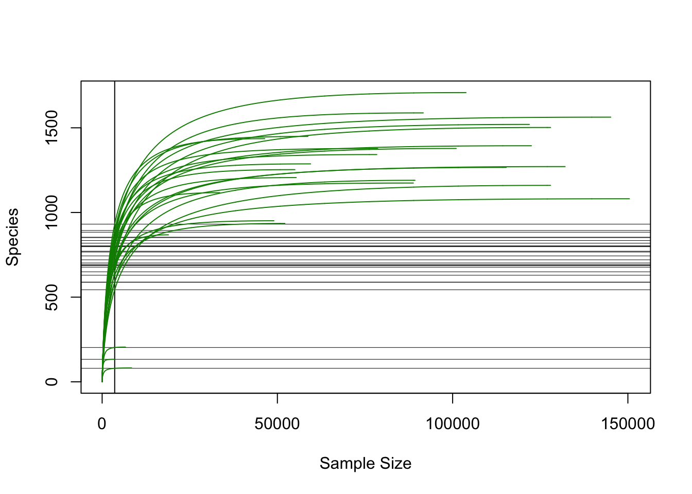
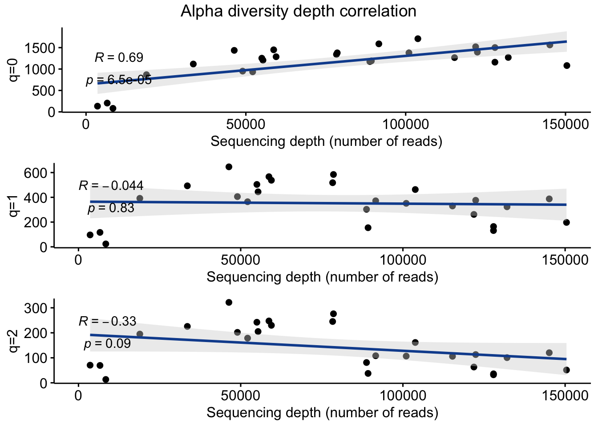
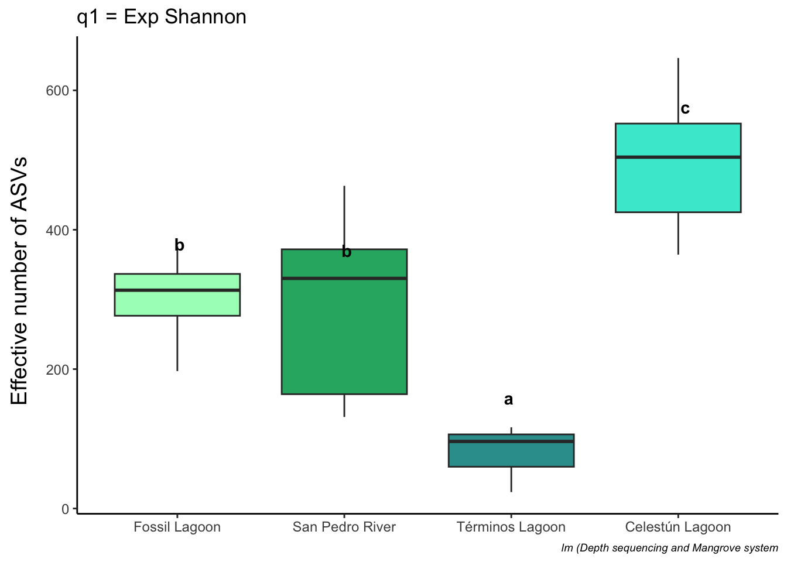

#Load libraries
library(phyloseq)
library(hilldiv)
library(tidyverse)
library(ggpubr)
library(ggplot2)
library(cowplot)
library(vegan)
library(easystats)
library(emmeans)
library(multcomp)Alpha diversity
Tip
Alpha diversity indices were calculated with Hill numbers (q0 = observed richness, q1 = Shannon Exp and q2 = Inv Simpson). The significance of the observed differences among mangrove systems was determined by employing a linear model, given the imbalanced sample numbers.
Load libraries and prepare data
#load data
physeq_qiime3 <- readRDS("rds/compare_mangroves/physeq_qiime3.rds")#Mangrove system colors
loc_colors <- c("Fossil Lagoon"= "#A7fcc1",
"San Pedro River" = "#26B170",
"Términos Lagoon" = "#329D9C",
"Celestún Lagoon" = "#41e8d3")# Extract data from phyloseq object
#library(phyloseq)
otu_data <- otu_table(physeq_qiime3, taxa_are_rows = TRUE)
metadata <- as(sample_data(physeq_qiime3), "data.frame")01. Get Hill numbers
# Calculate hill numbers
#library(hilldiv)
q0 <- hill_div(otu_data, qvalue = 0)
q1 <- hill_div(otu_data, qvalue = 1)
q2 <- hill_div(otu_data, qvalue = 2)
# Merge metadata with Hill numbers
#library(tidyverse)
q012 <- cbind(q0, q1, q2) %>% as.data.frame() %>%
rownames_to_column(var = "SampleID")
# join
metadata_with_hill <- q012 %>%
inner_join(metadata, by = c("SampleID"="SampleID"))
# show
metadata_with_hill %>% head() SampleID q0 q1 q2 Collection_date depth ID Environmental_medium
1 S1A015 1266 330 106.0 2023-09-28 0-15 S1A sediment
2 S1B07 1502 164 36.0 2023-09-28 0-15 S1B sediment
3 S2A515 1708 463 161.3 2023-09-28 0-15 S2A sediment
4 S2B07 1378 351 106.8 2023-09-28 0-15 S2B sediment
5 S3A07 1190 154 37.6 2023-09-28 0-15 S3A sediment
6 S3B515 1588 372 108.3 2023-09-28 0-15 S3B sediment
Geographic.Location Study_zone Ecological_type season Mangrove.system
1 Mexico:Tabasco Rio San Pedro Fringe flood San Pedro River
2 Mexico:Tabasco Rio San Pedro Fringe flood San Pedro River
3 Mexico:Tabasco Rio San Pedro Fringe flood San Pedro River
4 Mexico:Tabasco Rio San Pedro Fringe flood San Pedro River
5 Mexico:Tabasco Rio San Pedro Fringe flood San Pedro River
6 Mexico:Tabasco Rio San Pedro Fringe flood San Pedro River
Mangrove_type
1 Interior
2 Interior
3 Interior
4 Interior
5 Interior
6 Interior#save table
write.table(metadata_with_hill, "Tables/SurfaceComparison/Metadata_with_hill.tsv",
quote = FALSE, sep = "\t", row.names = TRUE, col.names=TRUE)02. Get Hill means
# Reorder q values
meta_qs <- metadata_with_hill %>%
pivot_longer(cols = q0:q2, names_to = "q", values_to = "value") %>%
filter(q %in% c("q0", "q1", "q2")) %>%
mutate(
qs = case_when(
q == "q0" ~ "q0=Observed",
q == "q1" ~ "q1=Exp Shannon",
q == "q2" ~ "q2=Inv Simpson",
))
#Get means of Hill numbers
means <- meta_qs %>% group_by(Mangrove_type, Mangrove.system, qs) %>%
summarise(means = mean(value, na.rm = TRUE),
sd = sd(value, na.rm = TRUE),
.groups = 'drop')
print(means)# A tibble: 12 × 5
Mangrove_type Mangrove.system qs means sd
<chr> <chr> <chr> <dbl> <dbl>
1 Coastal Celestún Lagoon q0=Observed 1202 207.
2 Coastal Celestún Lagoon q1=Exp Shannon 496. 87.6
3 Coastal Celestún Lagoon q2=Inv Simpson 234. 40.5
4 Coastal Términos Lagoon q0=Observed 140 61.8
5 Coastal Términos Lagoon q1=Exp Shannon 78.8 48.9
6 Coastal Términos Lagoon q2=Inv Simpson 51.2 32.7
7 Interior Fossil Lagoon q0=Observed 1230 134.
8 Interior Fossil Lagoon q1=Exp Shannon 300. 75.1
9 Interior Fossil Lagoon q2=Inv Simpson 86.5 26.9
10 Interior San Pedro River q0=Observed 1431. 191.
11 Interior San Pedro River q1=Exp Shannon 291. 118.
12 Interior San Pedro River q2=Inv Simpson 85.7 45.3#save table
write.table(means, "Tables/SurfaceComparison/Hill_means_sd.tsv", quote = FALSE,
sep = "\t", row.names = TRUE, col.names=TRUE)
# group by mangrove type
means_mangrove_type <- meta_qs %>% group_by(Mangrove_type, qs) %>%
summarise(means = mean(value, na.rm = TRUE),
sd = sd(value, na.rm = TRUE),
.groups = 'drop')
print(means_mangrove_type)# A tibble: 6 × 4
Mangrove_type qs means sd
<chr> <chr> <dbl> <dbl>
1 Coastal q0=Observed 974. 488.
2 Coastal q1=Exp Shannon 407. 195.
3 Coastal q2=Inv Simpson 194. 86.3
4 Interior q0=Observed 1369. 195.
5 Interior q1=Exp Shannon 294. 104.
6 Interior q2=Inv Simpson 86.0 39.4write.table(means, "Tables/SurfaceComparison/Hill_means_sd_mangrove_type.tsv", quote = FALSE,
sep = "\t", row.names = TRUE, col.names=TRUE)03. Get sequencing effort
### Sample effort
#library(vegan)
mat <- as(t(otu_table(physeq_qiime3)), "matrix")
raremax <- min(rowSums(mat))
# plot
system.time(rarecurve(mat, step = 100, sample = raremax, col = "green4",
label = FALSE))
user system elapsed
5.305 0.213 5.531 # save
pdf("Figures/SurfaceComparison/sample_effort.pdf")
system.time(rarecurve(mat, step = 100, sample = raremax, col = "green4",
label = FALSE)) user system elapsed
5.515 0.186 5.709 dev.off()quartz_off_screen
2 04. Check alpha diversity correlation with sequencing depth
#Get effective reads
Effective_reads <- colSums(otu_data[-1, ])
metadata_with_hill$Effective_reads <- Effective_readsAlpha diversity depth correlation to order q=0
# library(ggpubr)
q0_vs_depth <- ggscatter(metadata_with_hill,
x = "Effective_reads", y = "q0",
xlab= "Sequencing depth (number of reads)",
ylab = "q=0", add = "reg.line",
add.params = list(color = "#114e9d", fill = "lightgray"),
conf.int = TRUE, # Add confidence interval
cor.coef = TRUE, # Add correlation coefficient.
cor.coeff.args = list(method = "pearson", label.x = 3, label.sep = "\n")
)+
theme(legend.title = element_blank(), legend.position = "none")Alpha diversity depth correlation to order q=1
q1_vs_depth <- ggscatter(metadata_with_hill,
x = "Effective_reads", y = "q1",
xlab= "Sequencing depth (number of reads)",
ylab = "q=1", add = "reg.line",
add.params = list(color = "#114e9d", fill = "lightgray"),
conf.int = TRUE, # Add confidence interval
cor.coef = TRUE, # Add correlation coefficient
cor.coeff.args = list(method = "pearson", label.x = 3, label.sep = "\n")) +
theme(legend.title = element_blank(),
legend.position = "none")Alpha diversity depth correlation to order q=2
q2_vs_depth <- ggscatter(metadata_with_hill,
x = "Effective_reads", y = "q2",
xlab= "Sequencing depth (number of reads)",
ylab = "q=2", add = "reg.line",
add.params = list(color = "#114e9d", fill = "lightgray"),
conf.int = TRUE, # Add confidence interval
cor.coef = TRUE, # Add correlation coefficient
cor.coeff.args = list(method = "pearson", label.x = 3, label.sep = "\n")) +
theme(legend.title = element_blank(),
legend.position = "none")#Combine plot
title_corr_plot <- ggdraw() +
draw_label("Alpha diversity depth correlation")
correlation_plot_q012 <- plot_grid(title_corr_plot,
q0_vs_depth,
q1_vs_depth,
q2_vs_depth,
ncol = 1,
rel_heights = c(0.15, 1, 1, 1))
correlation_plot_q012
05. Get significant differences
Remember
The significance of the observed differences among mangrove systems was determined by employing a linear model, given the imbalanced sample numbers and positive effect of depth sequencing in the Observed richness.
# change variable to factor
metadata_with_hill$Mangrove.system <-
factor(metadata_with_hill$Mangrove.system)
# Change to Fossil Lagoon reference
metadata_with_hill$Mangrove.system <-
relevel(metadata_with_hill$Mangrove.system,ref = "Fossil Lagoon")q0 Observed richness
# linear model adjust
q0lm <- lm(q0 ~ log(Effective_reads) + Mangrove.system, data = metadata_with_hill)
# summary
summary(q0lm)
Call:
lm(formula = q0 ~ log(Effective_reads) + Mangrove.system, data = metadata_with_hill)
Residuals:
Min 1Q Median 3Q Max
-300.1 -126.7 29.5 73.7 295.5
Coefficients:
Estimate Std. Error t value Pr(>|t|)
(Intercept) -1437 1327 -1.08 0.290
log(Effective_reads) 228 113 2.01 0.056 .
Mangrove.systemCelestún Lagoon 174 142 1.22 0.236
Mangrove.systemSan Pedro River 218 105 2.08 0.049 *
Mangrove.systemTérminos Lagoon -399 368 -1.09 0.289
---
Signif. codes: 0 '***' 0.001 '**' 0.01 '*' 0.05 '.' 0.1 ' ' 1
Residual standard error: 173 on 22 degrees of freedom
Multiple R-squared: 0.856, Adjusted R-squared: 0.83
F-statistic: 32.7 on 4 and 22 DF, p-value: 5.68e-09# check model reliability
shapiro.test(residuals(q0lm))
Shapiro-Wilk normality test
data: residuals(q0lm)
W = 1, p-value = 0.4#effects
anova(q0lm)Analysis of Variance Table
Response: q0
Df Sum Sq Mean Sq F value Pr(>F)
log(Effective_reads) 1 3534553 3534553 117.5 2.7e-10 ***
Mangrove.system 3 406084 135361 4.5 0.013 *
Residuals 22 661987 30090
---
Signif. codes: 0 '***' 0.001 '**' 0.01 '*' 0.05 '.' 0.1 ' ' 1report(q0lm)Formula contains log- or sqrt-terms.
See help("standardize") for how such terms are standardized.
Formula contains log- or sqrt-terms.
See help("standardize") for how such terms are standardized.We fitted a linear model (estimated using OLS) to predict q0 with
Effective_reads and Mangrove.system (formula: q0 ~ log(Effective_reads) +
Mangrove.system). The model explains a statistically significant and
substantial proportion of variance (R2 = 0.86, F(4, 22) = 32.74, p < .001, adj.
R2 = 0.83). The model's intercept, corresponding to Effective_reads = 0 and
Mangrove.system = Fossil Lagoon, is at -1437.09 (95% CI [-4188.40, 1314.22],
t(22) = -1.08, p = 0.290). Within this model:
- The effect of Effective reads [log] is statistically non-significant and
positive (beta = 227.85, 95% CI [-6.69, 462.39], t(22) = 2.01, p = 0.056; Std.
beta = 1.07, 95% CI [-0.04, 2.17])
- The effect of Mangrove system [Celestún Lagoon] is statistically
non-significant and positive (beta = 173.67, 95% CI [-121.65, 468.99], t(22) =
1.22, p = 0.236; Std. beta = 0.54, 95% CI [-0.26, 1.34])
- The effect of Mangrove system [San Pedro River] is statistically significant
and positive (beta = 217.81, 95% CI [0.90, 434.71], t(22) = 2.08, p = 0.049;
Std. beta = 0.54, 95% CI [0.02, 1.06])
- The effect of Mangrove system [Términos Lagoon] is statistically
non-significant and negative (beta = -399.13, 95% CI [-1161.52, 363.27], t(22)
= -1.09, p = 0.289; Std. beta = -1.25, 95% CI [-2.78, 0.28])
Standardized parameters were obtained by fitting the model on a standardized
version of the dataset. 95% Confidence Intervals (CIs) and p-values were
computed using a Wald t-distribution approximation.# get differences with emmeans
#library(emmeans)
q0_lm_means <- emmeans(q0lm, pairwise ~ Mangrove.system)
# get significance letters
#library(multcomp)
cld_results <- cld(object = q0_lm_means$emmeans, Letters = letters)
# Convert to data frame
q0_emmeans_df <- as.data.frame(cld_results)
q0_emmeans_df Mangrove.system emmean SE df lower.CL upper.CL .group
Términos Lagoon 732 310.5 22 88 1376 a
Fossil Lagoon 1131 99.6 22 925 1338 a
Celestún Lagoon 1305 73.1 22 1153 1456 a
San Pedro River 1349 70.6 22 1203 1495 a
Confidence level used: 0.95
P value adjustment: tukey method for comparing a family of 4 estimates
significance level used: alpha = 0.05
NOTE: If two or more means share the same grouping symbol,
then we cannot show them to be different.
But we also did not show them to be the same. # Reorder samples
metadata_with_hill$Mangrove.system <- factor(
metadata_with_hill$Mangrove.system,
levels = c("Fossil Lagoon", "San Pedro River",
"Términos Lagoon", "Celestún Lagoon"))# boxplot with significance
q0plot <- ggplot(metadata_with_hill, aes(x = Mangrove.system, y = q0, fill = Mangrove.system)) +
geom_boxplot() +
#geom_jitter(aes(fill = Mangrove.system), width = 0.1, alpha = 0.4) +
geom_text(data = q0_emmeans_df, aes(y = emmean, label = .group), vjust = -3,
color = "black", fontface = "bold", position = position_dodge(0.9)) +
labs(title = "q0 = Observed", y = NULL, x = NULL) + #,
#caption = "letters by lm emmeans") +
theme_classic() + scale_fill_manual(values = loc_colors) +
theme(legend.position = "none")q1 Diversity Exp Shannon
# linear model
q1lm <- lm(q1 ~ Mangrove.system, data = metadata_with_hill)
# summary
summary(q1lm)
Call:
lm(formula = q1 ~ Mangrove.system, data = metadata_with_hill)
Residuals:
Min 1Q Median 3Q Max
-159.3 -72.8 17.5 65.7 172.4
Coefficients:
Estimate Std. Error t value Pr(>|t|)
(Intercept) 299.95 47.80 6.28 2.1e-06 ***
Mangrove.systemSan Pedro River -9.32 57.45 -0.16 0.8725
Mangrove.systemTérminos Lagoon -221.17 73.01 -3.03 0.0060 **
Mangrove.systemCelestún Lagoon 196.16 55.82 3.51 0.0019 **
---
Signif. codes: 0 '***' 0.001 '**' 0.01 '*' 0.05 '.' 0.1 ' ' 1
Residual standard error: 95.6 on 23 degrees of freedom
Multiple R-squared: 0.703, Adjusted R-squared: 0.664
F-statistic: 18.1 on 3 and 23 DF, p-value: 2.93e-06#check model reliability
shapiro.test(residuals(q1lm))
Shapiro-Wilk normality test
data: residuals(q1lm)
W = 1, p-value = 0.4# significance
q1_lm_means <- emmeans(q1lm, pairwise ~ Mangrove.system)
cld_results <- cld(object = q1_lm_means$emmeans, Letters = letters)
# Convert to data frame
q1_emmeans_df <- as.data.frame(cld_results)
q1_emmeans_df Mangrove.system emmean SE df lower.CL upper.CL .group
Términos Lagoon 79 55.2 23 -35 193 a
San Pedro River 291 31.9 23 225 357 b
Fossil Lagoon 300 47.8 23 201 399 b
Celestún Lagoon 496 28.8 23 436 556 c
Confidence level used: 0.95
P value adjustment: tukey method for comparing a family of 4 estimates
significance level used: alpha = 0.05
NOTE: If two or more means share the same grouping symbol,
then we cannot show them to be different.
But we also did not show them to be the same. # boxplot
q1plot <- ggplot(metadata_with_hill, aes(x = Mangrove.system , y = q1, fill = Mangrove.system)) +
geom_boxplot() +
#geom_jitter(aes(fill = Mangrove.system), width = 0.1, alpha = 0.4) +
geom_text(data = q1_emmeans_df, aes(y = emmean, label = .group), vjust = -4,
color = "black", fontface = "bold", position = position_dodge(0.9)) + labs(title = "q1 = Exp Shannon", y = NULL, x = NULL,
caption = "lm (Depth sequencing and Mangrove system") +
theme_classic() + scale_fill_manual(values = loc_colors) +
theme(legend.position = "none",
axis.text.y = element_text(size = 9),
axis.text.x = element_text(size = 9),
plot.caption = element_text(size = 7, face = "italic"))q2 Dominance Inv Simpson
# Model
q2lm <- lm(q2 ~ Mangrove.system, data = metadata_with_hill)
# summary
summary(q2lm)
Call:
lm(formula = q2 ~ Mangrove.system, data = metadata_with_hill)
Residuals:
Min 1Q Median 3Q Max
-54.83 -33.51 8.73 20.64 88.13
Coefficients:
Estimate Std. Error t value Pr(>|t|)
(Intercept) 86.524 20.088 4.31 0.00026 ***
Mangrove.systemSan Pedro River -0.777 24.142 -0.03 0.97459
Mangrove.systemTérminos Lagoon -35.356 30.685 -1.15 0.26106
Mangrove.systemCelestún Lagoon 147.014 23.457 6.27 2.1e-06 ***
---
Signif. codes: 0 '***' 0.001 '**' 0.01 '*' 0.05 '.' 0.1 ' ' 1
Residual standard error: 40.2 on 23 degrees of freedom
Multiple R-squared: 0.809, Adjusted R-squared: 0.785
F-statistic: 32.6 on 3 and 23 DF, p-value: 1.88e-08#check model reliability
shapiro.test(residuals(q2lm))
Shapiro-Wilk normality test
data: residuals(q2lm)
W = 0.9, p-value = 0.2# get significance
q2_lm_means <- emmeans(q2lm, pairwise ~ Mangrove.system)
cld_results <- cld(object = q2_lm_means$emmeans, Letters = letters)
# Convert to data frame
q2_emmeans_df <- as.data.frame(cld_results)
q2_emmeans_df Mangrove.system emmean SE df lower.CL upper.CL .group
Términos Lagoon 51.2 23.2 23 3.2 99.2 a
San Pedro River 85.7 13.4 23 58.0 113.4 a
Fossil Lagoon 86.5 20.1 23 45.0 128.1 a
Celestún Lagoon 233.5 12.1 23 208.5 258.6 b
Confidence level used: 0.95
P value adjustment: tukey method for comparing a family of 4 estimates
significance level used: alpha = 0.05
NOTE: If two or more means share the same grouping symbol,
then we cannot show them to be different.
But we also did not show them to be the same. # boxplot
q2plot <- ggplot(metadata_with_hill, aes(x = Mangrove.system, y = q2, fill = Mangrove.system)) +
geom_boxplot() +
#geom_jitter(aes(fill = Mangrove.system), width = 0.1, alpha = 0.4) +
geom_text(data = q2_emmeans_df, aes(y = emmean, label = .group), vjust = -4,
color = "black", fontface = "bold", position = position_dodge(0.9)) +
labs(title = "q2 = Inv Simpson", y = NULL, x = NULL,
caption = "lm (Depth sequencing and Mangrove system") +
theme_classic() + scale_fill_manual(values = loc_colors) +
theme(legend.position = "none",
axis.text.y = element_text(size = 9),
axis.text.x = element_text(size = 9),
plot.caption = element_text(size = 7, face = "italic"))Combine plots
Take note
Just Shannon diversity was created because showed significant differences
#Combine alpha diversity plots
# library(ggplot2)
# library(cowplot)
ytitle <- ggdraw() + draw_label("Effective number of ASVs",
angle = 90, size = 14 )
q1y_plot <- plot_grid(ytitle, q1plot, ncol = 2, rel_widths = c(0.05, 1))
# show
q1y_plot
# save
ggsave("Figures/SurfaceComparison/alphadiv_per_loc.pdf",
q1y_plot, width = 6.3, height = 9.9)Save rds alpha diversity plot
saveRDS(q1y_plot, "rds/compare_mangroves/alpha_diversity_surface_plot.rds")Alpha diversity – Microbial Diversity from a Fossil Lagoon and comparative Interior vs Coastal Mangroves Alpha diversity – Microbial Diversity from a Fossil Lagoon and comparative Interior vs Coastal Mangroves Alpha diversity – Microbial Diversity from a Fossil Lagoon and comparative Interior vs Coastal Mangroves Microbial Diversity from a Fossil Lagoon and comparative Interior vs Coastal Mangroves Website of microbial diversity analysis of paper: tal tal tal Website of microbial diversity analysis of paper: tal tal tal